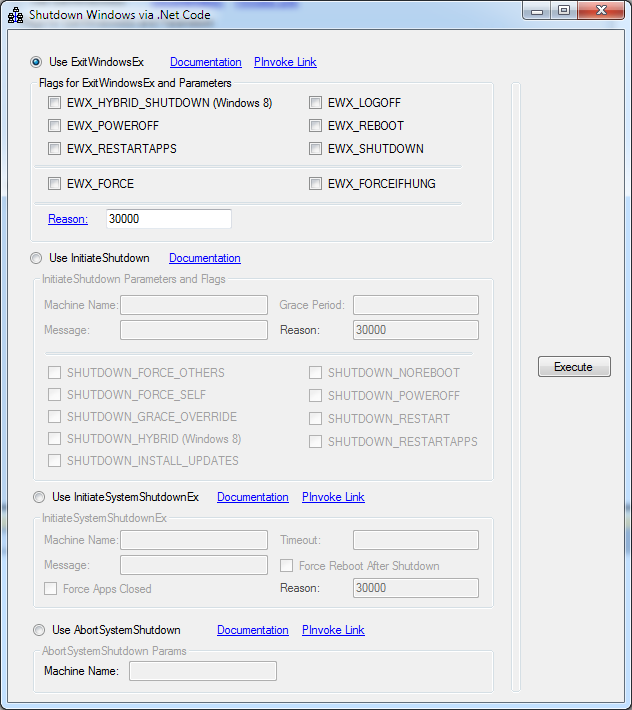

Shut down a computer using .NET (CSShutdownComputer)
The application demonstrates how to shut down a computer using .net. (CSShutdownComputer)
Introduction
The application demonstrates how to shut down a computer using .net. I’ve pinvoked the native API’s to get this going. Following are the API’s implemented…
1. ExitWindowsEx
2. InitiateShutdown
3. InitiateSystemShutdownEx
4. AbortSystemShutdown
Running the Sample
I’ve provided links which points towards the documentation in the application itself. Select any of the four radios to activate corresponding API. Fill in the options as per the documentation. Also note that I haven’t provided much validation since I would like the user to invoke the API as would like to, no restrictions. Read the documentation carefully.
Also note that remote shutdown will only work if the remote computer has remote shutdown enabled. Use secpol.msc to enable this feature for the remote computer.
InitiateShutdown and InitiateSystemShutdownEx will end up showing a message box before shutting down the computer. Once the timeout expires the system automatically shutdowns. If you want to prevent this shutdown invoke “AbortSystemShutdown”.
This is how the application looks like…

Using the Code
The gist of the application lies in MainForm.cs file. This is how the API calls look like…
[DllImport("user32.dll", CharSet = CharSet.Auto, SetLastError = true)]
[return: MarshalAs(UnmanagedType.Bool)]
static extern bool ExitWindowsEx(uint uFlags, uint uReason);
protected void CallExitWindowsEx()
{
CheckBox [] chkFlags = { chkEWX_FORCE,
chkEWX_FORCEIFHUNG,
chkEWX_HYBRID_SHUTDOWN,
chkEWX_LOGOFF,
chkEWX_POWEROFF,
chkEWX_REBOOT,
chkEWX_RESTARTAPPS,
chkEWX_SHUTDOWN };
UInt32 dwFlags = GetFlags(chkFlags);
UInt32 reason = 0;
if (HexToNum(txtReasonEWE.Text, out reason))
{
if (!ExitWindowsEx(dwFlags, reason))
{
ShowLastError();
}
}
}
// Call InitiateShutdown
[DllImport("advapi32.dll", CharSet = CharSet.Auto, SetLastError = true)]
[return: MarshalAs(UnmanagedType.Bool)]
static extern bool InitiateShutdown(string lpMachineName,
string lpMessage,
UInt32 dwGracePeriod,
UInt32 dwShutdownFlags,
UInt32 dwReason);
void CallInitiateShutdown()
{
CheckBox [] chkFlags = { chkSHUTDOWN_FORCE_OTHERS,
chkSHUTDOWN_FORCE_SELF,
chkSHUTDOWN_GRACE_OVERRIDE,
chkSHUTDOWN_HYBRID,
chkSHUTDOWN_INSTALL_UPDATES,
chkSHUTDOWN_NOREBOOT,
chkSHUTDOWN_POWEROFF,
chkSHUTDOWN_RESTART,
chkSHUTDOWN_RESTARTAPPS };
UInt32 flags = GetFlags(chkFlags);
UInt32 reason = 0;
if (HexToNum(txtReasonIS.Text, out reason))
{
UInt32 gracePeriod;
if (HexToNum(txtGracePeriodIS.Text, out gracePeriod))
{
if (!InitiateShutdown(txtMachineNameIS.Text, txtMessageIS.Text, gracePeriod, flags, reason))
{
ShowLastError();
}
}
}
}
// Call InitiateSystemShutdownEx
[DllImport("advapi32.dll", CharSet = CharSet.Auto, SetLastError = true)]
[return: MarshalAs(UnmanagedType.Bool)]
public static extern bool InitiateSystemShutdownEx(
string lpMachineName,
string lpMessage,
uint dwTimeout,
bool bForceAppsClosed,
bool bRebootAfterShutdown,
UInt32 dwReason);
void CallInitiateSystemShutdownEx()
{
UInt32 timeout = 0;
if (HexToNum(txtTimeOutISSE.Text, out timeout))
{
UInt32 reason = 0;
if (HexToNum(txtReasonISSE.Text, out reason))
{
if (!InitiateSystemShutdownEx(txtMachineNameISSE.Text, txtMessageISSE.Text, timeout, chkForceAppsClosed.Checked, chkRebootAfterShutdown.Checked, reason))
{
ShowLastError();
}
}
}
}
[DllImport("user32.dll", CharSet = CharSet.Auto, SetLastError = true)] [return: MarshalAs(UnmanagedType.Bool)] static extern bool ExitWindowsEx(uint uFlags, uint uReason); protected void CallExitWindowsEx() { CheckBox [] chkFlags = { chkEWX_FORCE, chkEWX_FORCEIFHUNG, chkEWX_HYBRID_SHUTDOWN, chkEWX_LOGOFF, chkEWX_POWEROFF, chkEWX_REBOOT, chkEWX_RESTARTAPPS, chkEWX_SHUTDOWN }; UInt32 dwFlags = GetFlags(chkFlags); UInt32 reason = 0; if (HexToNum(txtReasonEWE.Text, out reason)) { if (!ExitWindowsEx(dwFlags, reason)) { ShowLastError(); } } } // Call InitiateShutdown [DllImport("advapi32.dll", CharSet = CharSet.Auto, SetLastError = true)] [return: MarshalAs(UnmanagedType.Bool)] static extern bool InitiateShutdown(string lpMachineName, string lpMessage, UInt32 dwGracePeriod, UInt32 dwShutdownFlags, UInt32 dwReason); void CallInitiateShutdown() { CheckBox [] chkFlags = { chkSHUTDOWN_FORCE_OTHERS, chkSHUTDOWN_FORCE_SELF, chkSHUTDOWN_GRACE_OVERRIDE, chkSHUTDOWN_HYBRID, chkSHUTDOWN_INSTALL_UPDATES, chkSHUTDOWN_NOREBOOT, chkSHUTDOWN_POWEROFF, chkSHUTDOWN_RESTART, chkSHUTDOWN_RESTARTAPPS }; UInt32 flags = GetFlags(chkFlags); UInt32 reason = 0; if (HexToNum(txtReasonIS.Text, out reason)) { UInt32 gracePeriod; if (HexToNum(txtGracePeriodIS.Text, out gracePeriod)) { if (!InitiateShutdown(txtMachineNameIS.Text, txtMessageIS.Text, gracePeriod, flags, reason)) { ShowLastError(); } } } } // Call InitiateSystemShutdownEx [DllImport("advapi32.dll", CharSet = CharSet.Auto, SetLastError = true)] [return: MarshalAs(UnmanagedType.Bool)] public static extern bool InitiateSystemShutdownEx( string lpMachineName, string lpMessage, uint dwTimeout, bool bForceAppsClosed, bool bRebootAfterShutdown, UInt32 dwReason); void CallInitiateSystemShutdownEx() { UInt32 timeout = 0; if (HexToNum(txtTimeOutISSE.Text, out timeout)) { UInt32 reason = 0; if (HexToNum(txtReasonISSE.Text, out reason)) { if (!InitiateSystemShutdownEx(txtMachineNameISSE.Text, txtMessageISSE.Text, timeout, chkForceAppsClosed.Checked, chkRebootAfterShutdown.Checked, reason)) { ShowLastError(); } } } }
More Information
http://msdn.microsoft.com/en-us/library/windows/desktop/aa376868(v=vs.85).aspx